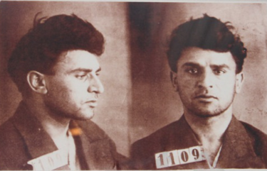
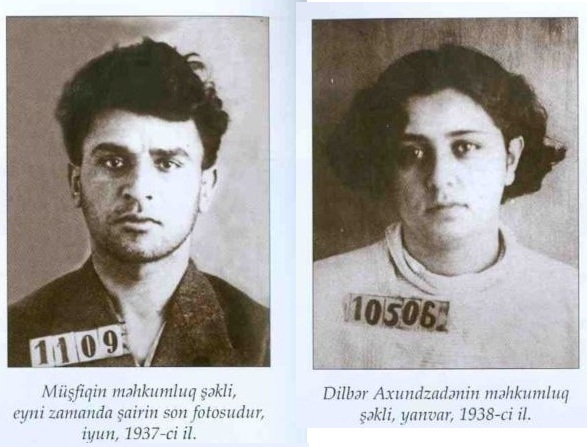

1937-ci il repressiyaları Azərbaycan ədəbiyyatının, mədəniyyətinin görkəmli siması Mikayıl Müşfiqdən də yan
keçmir.NKVD-nin 27 may 1937-ci ildə təhlükəsizlik kapitanı Çinmanın tərtib etdiyi arayışda qeyd olunmuşdu ki,
"Mikayıl Müşfiq hal-hazırda "Müsavat gənclər təşkilatı ilə əlaqə saxlayıb, partiya və hökumətin ünvanına böhtanlar
deməkdən çəkinmir".Bundan əlavə arayışda Müşfiqin "Azərbaycanın öz azadlığı yoxdur, o, Rusiyanın koloniyasında
yaşayır" kimi qızışdırıcı sözləri ilə xalqın arasında narazılıq yaratmaq istəyi iddia olunurdu.Həbs olunmuş
müttəhimlərin "könüllü" surətdə yazdığı izahatlar da nəzərə alınmış və müstəntiq tərəfindən hazırlanan həmin arayışa
əsasən Mikayıl Müşfiqin adına iyunun 3-də 508 nömrəli order yazılmış, cümə günü, iyun ayının 4-də isə evində həbs
edilmişdi.
Mikayıl Müşfiqi həbs edənlər və evində axtarış aparanlar Dövlət Təhlükəsizliyi İdarəsinin əməkdaşları M. Mustafayev,
N. Petrunin və MİK-nin (Mərkəzi İcraiyyə Komitəsi) sədri Şevçenko idi. Axtarış zamanı Türkiyədə nəşr olunmuş 14
kitab, başqa nəşrdən olan 5 kitab, türk dilində 4 müxtəlif jurnal, 6 İran nəşri, 14 foto şəkil, pasport, hərbi
bilet, əlyazmalar və digər əşyalar müsadirə olunmuşdu. Əlyazmaların içində Mirzə Qədir Visaqinin şeir divanı, opera
librettoları, mənzum nağılları, müşfiqin yüzlərcə şeiri, türk-dram teatrının üçün işlədiyi mənzum dramın əlyazması,
məktublar və Dilbər Axundzadənin "Dilbərnamə" yazılmış dəftəri də var idi. Müsadirə olunmuş əşyalar 13 oktyabr
1937-ci ildə yandırılıdı.
Şairin ilk istintaqı 1937-ci il iyun ayının 5-də baş tutdu. İstintaqı aparan 4-cü şöbənin IV bölməsinin əməliyyat
müvəkkili serjant Q. B. Platonov olmuşdur. İstintaq protokolunda qeyd olunmuşdur:
"1937-ci il iyunun ayının 5-də, mən 4-cü şöbənin IV bölməsinin əməliyyat müvəkkili serjant Q.B.Platonov müttəhim
İsmayılzadə Mikayıl Müşfiq Qadir oğlunu istintaq etdim. Doğum ili 1908-ci il, ünvanı Nijno Priyutskaya küçəsi 108,
milliyyəti azərbaycanlı, pasport beşillikdir, JAA N. 543214, məşğuliyyəti Azərbaycan Dövlət Nəşriyyatında redaktor
və tərcüməçi, Azərbaycan Sovet Yazıçılar İttifaqının üzvüdür. Atası müəllimdi, 1914-cü ildə ölüb. İnqilabdan əvvəl
və sonra təhsil alıb qulluqçudur – 1927-ci ildən. Ailənin fəaliyyətdə olan üzvləri: arvadı Dilbər Axundzadə iyimi
üç yaşında, Azərbaycan Tibb İnstitutunun tələbəsidir. Qardaşı Mirzə 32 yaşındadır, hesabdardır. Ali təhsillidir,
bitərəfdir. İnqilabdan qabaq və sonra heç bir istintaq və ittihama cəlb olunmayıb. 1929-cu ildən respublika
ədəbiyyat müsabiqəsində 2 mükafat alıb. Qızıl Ordunun tələbə toplantısında olub."

Mikayıl Müşfiq həbsdə. 5 iyun 1937-ci il
Şairdən sorğu zamanı əks-inqilabçı təşkilatın üzvü olduğu və əks-inqilabi millətçi mövqedə dayandığı barədə
soruşulmuşdur, lakin şair əks-inqilabçı millətçi təşkilatın üzvü olmadığını və əks-inqilabi millətçi mövqedə
dayanmadığını söyləmişdir. Həbsdə olarkən şairə işgəncələr verilirdi. Əvvəlcə əl və ayaq dırnaqları çıxardılmışdı. Daha sonra onu quyusu
olan xüsusi kamerada iki gün qurşağacan içində siçovullar olan suda saxlayırlar. İki gecə yatmayandan sonra
təkadamlıq kamerada yerə şüşə qırıntıları töküb onu ayaqyalın gəzməyə məcbur edirlər. M. Müşfiqə işgəncələr verib
onu adamlarla üzləşdirsələr də, şair heç kəsin üzünə durmadı.
"Ədəbiyyat", "Gənc işçi", "Yeni yol" qəzetləri, "Hücum", "İnqilab və mədəniyyət" jurnallarında şairin
əleyhinə yazılar çap olunurdu. M. Müşfiq həbsdə olarkən onun əleyhinə yazanlar olur. Onlardan biri də Ə. Əkbər idi.
"Kommunist" qəzetinin 20 iyun 1937-ci il, Bazar № 141 (5069) buraxılışında "Ədəbiyyatda düşmən qalıqları axıradək ifşa
edilməli" adlı sifarişli məqalə çap olunur. Məqalədə deyilir:
... M.Müşfiq uzun illər boyu sosializm quruluşumuza istər açıq, istərsə də gizli surətdə zidd olmuş və murdar
işlərini davam etdirmişdir. Ədəbiyyatda xalq düşmənlərinin bütün qalıqları axıradək ifşa olunmalı, böyük sosializm
quruluşumuza qarşı azğıncasına kin və ədavət bəsləyən müsavatçı və trotskist quduzlar yox edilməlidir.
"Ədəbiyyat" qəzetinin 9 iyun 1937-ci il № 25 (110) buraxılışında M. Müşfiqlə bağlı məqalələr çap
olunmuşdu. "Sıralarımızı təmizləyəlim" məqaləsində deyilirdi:
Xalq düşməni Cavid, Cavad, Müşfiq, Sanılı və b. ikiüzlü siyasəti bizi daha da sayıq olmağa və bu kimi örtülü
düşmənlərlə mübarizədə amansız olmağa vadar edir.
"Sıralarımızda düşmənlərə yer yoxdur" məqaləsində deyilir:
H.Cavid, M.Müşfiq, Simurq, Qantəmir kibiləri özə əsərlərində müxtəlif pərdələr, cümləpəsəndliyin altında
konttrevolyusyon millətçiliyi təbliğ etmişlər.
"Amansız olmalı" adlı məqalənin müəllifi yazırdı:
Faktlar göstərir ki, biz öz cəbhəmizi düşmənlərdən və düşmən təsirlərindən təmizləməkdə çox az iş görmüşük. Uzun
müddət "Yenidən qurulmaq" pərdəsi altında gizlənən, bizi aldadan, yalan və hiyləgər vədlərlə ədəbiyyat cəbhəsində
yaşayan konttrevolyusyener Cavid, Cavad, və onların musavatçı şagirdi Müşfiq və başqaları sosializm işinə böyük
ziyan vurmuşlar. Bu konttrevolyusyenerlər həmişə öz hərəkətlərilə, orijinal olmayan "əsər"lərilə ədəbiyyat mühitinə
konttrevolyusion musavatçılıq zəhəri yaymağa çalışmışlar.
NKVD-nin rəisi Sumbatovun və SSRİ prokuronun baş köməkçisi Rozovskinin imzası ilə təsdiq olunan ittihamnamədə "1926-cı
ildən 1930-cu ilə qədər əks-inqilabçıları müdafiə etmək nəticəsində Almaz İldırımzadə və Nəsir Quluzadə tərəfindən
İsmayılzadə Mikayıl Müşfiq Qədir oğlu əks-inqilabi müsavat ruhlu şəkildə hazırlanmasında" ittiham olunurdu.
İttihamnamədə qeyd olunurdu ki, Müşfiq "1930-cu ildə Nəsirzadə tərəfindən dəvət almış və qanunsuz gənc Müsavat
təşkilatına cəlb edilmiş; 1930–1935-ci illərdə Müşfiq qəddar əks-inqilabi millətçi Müsavat təşkilatının üzvü idi.
1935-ci ilin axırında Müşfiq əks-inqilabi millətçi hərəkətlərinə görə Məmmədkazım Ələkbərli tərəfindən əks-inqilabi
millətçi təşkilata üzv olunmuşdur. Müşfiq M. Ələkbərli tərəfindən cəlb olunduğunu, onun Sovet dövlətinə qarşı iş
apardığını "boynuna almışdır". Mikayıl Müşfiq "boynuna almışdır" ki, o əks-inqilabi təşkilatın bütün qərarlarını demək
olar ki, yerinə yetirib. Buna görə də, İsmayılzadə Mikayıl Müşfiq Qədir oğlu Azərbaycan SSR cinayət məcəlləsinin
64,70,73 maddələri ilə təqsirli bilinir".
NKVD ömrünün son günlərini yaşayan şair Hacı Kərim Sanılıya təzyiq edir. Sanılı ona qarşı edilən zülmlərə,
məşəqqətlərə dözə bilməyərək aşağıdakı ifadəni vermək məcburiyyətində qalır:

Mikayıl Müşfiq qatı millətçi olub. Mənim iştirakımla hər dəfə həvəslə Müşfiq əksinqilabi fikirlərlə çıxış edərək
deyirdi: Azərbaycan əhalisi başqa millətlərdən fərqli olaraq (rus, erməni) gözdən salınmışdır. Başqa millətlər (rus,
erməni) Azərbaycana o öz mədəniyyətini inkişaf etdirməyə imkan vermədiyindən, nəticədə də xalq gözdən düşmüş
sayılır.
Həmin ifadədən sonra ağır işgəncələrə dözə bilməyən H. K. Sanılı dünyasını dəyişir.
Müşfiqin sonuncu istintaqı 27 noyabr 1937-ci ildə baş tutdu. SSR Ali Məhkəməsi hərbi kollegiyasının səyyar sessiyası 5
yanvar 1938-ci ildə, çərşənbə günü güllələnmə qərarı çıxardı.
1938-ci il yanvar ayının 5-də SSRİ Ali Məhkəməsinin 20 dəqiqəlik məhkəmə iclası Müşfiq barəsində güllələnmə qərarı
verir. Hökm yanvarın 6-da Nargin adasında yerinə yetirilir.
1956-cı il mayın 23-də SSRİ Ali Məhkəməsinin Hərbi kollegiyasının qərarına əsasən Mikayıl Mirzə Əbdülqədir oğlu
İsmayılzadə (Mikayıl Müşfiq) ölümündən sonra bəraət almışdır.
Azərbaycan Nazirlər Soveti yanında DTK-nın rəisinə 9d-471–56 nömrəli gizli məktub gönərildi. Həmin məktubda
yazılmışdı:
SSRİ Daxili İşlər Nazirliyinin birinci xüsusi şöbəsi, SSRİ Nazirlər Soveti yanında DTK-nın qeydiyyat qeydiyyat-arxiv
şöbəsi. 23 may 1956-cı ildə SSRİ Ali Məhkəməsi Kollegiyasının İsmayılzadə Mikayıl Müşfiq Qədir oğlunun işi
haqqındakı göndərişini icra olunmaq üçün göndərirəm. İsmayılzadənin yaxın qohumlarını tapıb, göndərişin mətnin tapıb
tam elan etmədən, onlara ancaq işin baxılması və tarixi barədə məlumat verilsin. Hərbi kollegiya və Baş Hərbi
Prokurorluğa da məlumat verilsin. DTK Azərbaycan şöbəsi idarəsinin rəisindən xahiş edirəm ki, İsmayılzadənin qanuni
varislərinə müsadirə olunmuş əmlakı və ya onun dəyərini qaytarsın. İcra barədə Hərbi kollegiyaya məlumat verilsin.
Müşfiqin qohumlarını axtarıb tapmaq işi Yazıçılar İttifaqına həvalə edilir. Qanuni varis olan Balacaxanım İsmayılzadə
dövlət tərəfindən ayrılmış vəsaiti qəbul etmir və qəbz yazır:
Mən İsmayılova Balacaxanım Qədir qızı həmin qəbzi ondan ötrü verirəm ki, mənim qardaşım Mikayıl Müşfiq Qədir oğlu
İsmayılzadə bəraət almışdır. Bu barədə məlum edirəm ki, Mikayıl Müşfiqin heç kəsi yoxdur, ailəsindən ancaq bir mən
qalmışam. Onun yoldaşı Axundova Dilbər o vaxtdan ərə getmiş, Kirovabad şəhərində yaşayır. Evdə qalan şeylər Mikayıl
Müşfiqindir. Dilbərin evdə heç bir şeyi yoxdur. Qalan şeylərə mənim ehtiyacım yoxdur. İsmayılova.
Mikayıl Müşfiqin əmlakı barədə arxiv materiallarından görünür ki, "arvadı Dilbər Hacı qızı Axundzadənin həbsindən
sonra onların mənzili Baksovet tərəfindən Roşevkin familiyalı vətəndaşa təhvil verilmişdi".
Mikayıl Müşfiqin qətlində ittiham olunanlar aşağıda qeyd olunmuşdur:
Yuvalian Davidoviç Sumbatov-Topuridze – Azərbaycan SSR-nin keçmiş daxili işlər üzrə xalq
komissarı.
İstintaq işində saxtakarlığa, həbs olunanların döyülməsinə və günahsız adamların kütləvi repressiyasına görə
1953-cü ildə həbs edilmiş və cinayət məsuliyyətinə cəlb olunmuşdur.
Vladimir İvanoviç Gerasimov – Azərbaycan SSR Daxili işlər üzrə xalq komissarının keçmiş müavini.
16 iyun 1938-ci ildə RFFSR-CM-nin 58–2, 58–8 və 58–11 maddələri üzrə ittiham olunmuşdur.
Lev Abramoviç Tsinman – Azərbaycan Daxili İşlər üzrə Xalq Komissarlığı dördüncü şöbəsinin rəisi.
Moskva vilayəti hərbi tribunallarının qərarı ilə 20 illik azadlıqdan məhrum edilmişdir.
İvan Petroviç Klinmençiç – Azərbaycan Daxili İşlər üzrə Xalq Komissarlığı dördüncü şöbəsinin
birinci şöbə rəisi.
8 may 1939-cu ildə istintaq işində saxtakarlığa görə SSRİ Ali Məhkəməsinin Hərbi kollegiyası tərəfindən 15
illik həbs cəzasına məhkum edilmişdir.
Q. B. Platonov (adı tam məlum deyil) – Azərbaycan Daxili İşlər üzrə Xalq Komissarlığı dördüncü
şöbəsinin həbs işləri idarəsinin əməliyyat müvəkkili.
Taleyi haqqında məlumat yoxdur.
14 mart 1956-cı ildə hərbi prokuror, podpolkovnik Plexanovun imzaladığı sənəddə qeyd olunub ki, Vladimir
Nikolayeviç Platonov 1955-ci ilin martında DTK orqanlarından saxtakarlıq işlərinə görə azad edilmişdir.
2018-ci ilə qədər şairin cəsədinin Xəzər dənizinə atılması ehtimal edilirdi.Azərbaycan əsilli rusiyalı milyarder
Fərhad Əhmədov atası Teymur Əhmədovun qalıqlarını axtararkən Stalin repressiyası illərində cəzalandırılanların bir
çoxunun qalıqlarının da uyuduğu Qaradağ rayonunun Puta qəsəbəsində Azərbaycan şairi Mikayıl Müşfiqin qalıqlarını aşkar
etdiyini bildirmişdi.Ərazidə partiya üzvlərinin, dövlət xadimlərinin və repressiya illərində güllələnmiş digər
şəxslərin qalıqları tapılıb. 2020-ci ilin avqustuna olan məlumata görə, qalıqların üzərində DNK ekspertizası hələ də
heç bir nəticə verməyib.
Mikayıl Müşfiqin həyat yoldaşı Dilbər Axundzadənin qızı Leyla Axundzadə onun güllələnmədiyini iddia edir.
Şəxsi həyatı
Mikayıl Müşfiq özünün ən birinci vəzifəsini insanları təhsilə, elmə yönəltməkdə, şagirdlərdə ədəbiyyata maraq oyatmada görürdü.Müşfiq nadir hafizə sahibi idi. O öz hafizəsinə arxayın olub, çox vaxt qoşduğu şeiri uzun müddət vərəqə köçürməyib, şeirlərini, eləcə də bir çox klassik şairlərin əsərlərini əzbərdən bilirdi.
Sosializm quruculuğu illərində həyata keçirilən bir sıra reformalardan Müşfiq çox razı olub. Ərəb əlifbasının latın əlifbası ilə əvəz olunması haqda şair hətta şeir də yazıb. Amma həmin illərdə tarın qadağan olunması ilə bağlı söz-söhbət Müşfiqi də, yaxın dostu tarzən Qurban Pirimovu da bərk sarsıdıb.Müşfiq evlərinə qonaq gələn Pirimova tarın qadağan olunmasının xalqa ancaq ziyan vuracağını deyib.Müşfiqin həyat yoldaşı Dilbər Axundzadə qeyd edirdi:
O, ustaddan tarı götürüb çalmasını xahiş etdi. Qurban müəllim tarı sinəsinə sıxıb "Yetim segahı" çalmağa başladı. Tar dilə gəldi, tar inildədi, tar hönkürdü… Tarın qopardığı nalələr anında Müşfiq özünü çəkdiyi papirosun dumanlarına bürümüşdü. Birdən onu gördüm ki, Müşfiqin yanıqlı səsi tarın naləsinə qarışdı və həmin günlərdə yazdığı "Oxu tar" şeirini söyləməyə başladı. Xoşbəxtlikdən, onların həyəcanı uzun sürmədi. Tar qadağan edilmədi…
1931-ci ilin mayında Müşfiq Geoloji İnstitutun buraxılış gecəsində Dilbər Axundzadə ilə tanış olur.Dilbər xanım Müşfiqin əmisi arvadı Fəramuşla tələbə yoldaşı olub.Tanınmaqda olan gənc şairlə Dilbəri əmisi arvadı tanış edib.Təsadüfi bir neçə görüşdən sonra Müşfiq Dilbər xanıma sevgi məktubları göndərib, hər görüşə yeni şeirlə gəlib. Ona olan sevgisi şairi yeni lirik şeirlər yazmağa ruhlandırır. Müşfiq növbəti görüşlərin birində Dilbər xanıma elçi göndərmək və tez vaxtda nişanlanmaq istədiyini bildirib.1932-ci ilin aprel ayında cütlük nişanlanıb. Onların kəbini isə təxminən bir il sonra, 1933-cü il iyun ayının 20-də kəsilib.1934-cü ilin mart ayında onların Yalçın adında oğulları anadan olmuş, lakin 2 ay sonra yüksək hərarətlə seyr edən xəstəlik nəticəsində ölmüşdür.
1937-ci il noyabr ayının 1-də artıq NKVD inspektoru Kolqinanın təqdimatı ilə M. Müşfiqin həyat yoldaşı Dilbər Axundzadənin həbsi üçün rəis müavini Borşev qərar çıxarır.Noyabr ayının 2-də isə Dilbər Axundzadə həbsi üçün order yazılır.M. Müşfiqin güllələnməsinə dörd gün qalmış Dilbər Axundzadə vətən xainin həyat yoldaşı kimi həbs edilir.
Həyat yoldaşının güllələnməsindən bir ay keçməmiş təhlükəsizlik leytenantı Q. B. Avanesov tərəfindən ilk dindirilmə aparılır.Dilbər xanım iki aylıq əzab-əziyyətli ingəncələrə dözməyərək psixi gərginlik keçirir.O, 28 fevral 1938-ci ildə 1 saylı Əsəb xəstəlikləri xəstəxanasına müalicəyə göndərilir.Həmin xəstəxananın baş həkimi İ. İ. Antonov və qadın şöbəsinin müdiri A. A. Əsgərovun 19 fevral 1939-cu il tarixdə tərtib etdiyi aktda Dilbər Axundzadənin müalicə olunduğu zaman gəldiyləri nəticədən aydın olur ki, xəstə müalicə olunan zaman sistemsiz danışığı, suallara cavabı başa düşülməzdir. Onun heç nə ilə maraqlanmadığı, suallara ötəri cavab verdiyi qeyd olunur.1938-ci ilin oktyabr ayından o sakitləşəndən sonra hallusinasiya halları keçirir.
7 mart 1939-cu ildə Respublika prokurorluğunun xüsusi işlər şöbəsi D. Axundzadənin həbsdən azad olunması üçün təqdimat yazır.10 mart 1939-cu ildə NKVD-nin rəis müavini Kərimovun imza qoyduğu qərara əsasən D. Axundzadə həbsdən azad edilir və istintaq işi arxivə verilir.D. Axundzadə həbsxanadan azad olandan sonra o yenə də özünü təqsirli bilməmiş və beləki növbəti sorğuda günahsız olduğını bir daha bildirmişdir.